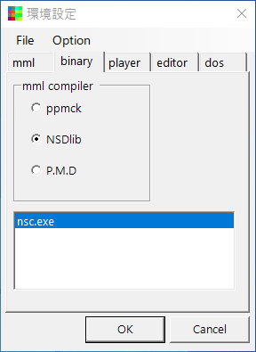
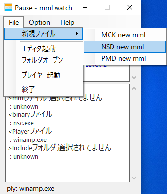
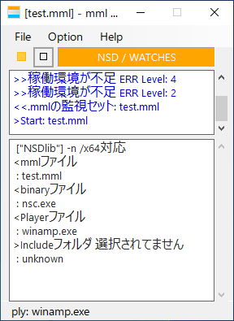

|
mml_watch.exeを起動のち、 "Option - 環境設定"を選択します。 |
|  |
環境設定パネルを開き、 "binaryタブ"にある、ラジオボタンからNSDlibを選択、 NSDlibの"bin"フォルダにある、"nsc.exe"を、 "リストボックス"へDrug&Dropで登録します。 同じく、"playerタブ"をクリック、 同様に"nsfplay.exe"を登録します。 続いて、"editorタブ"をクリック、 構造化エディタ"Sted.exe"を登録します。 |
|  |
環境設定パネルから、 "File - 新規ファイル - NSD new mml"をクリック、 ファイル名を入力して、"新規mmlファイル"を保存します。 環境設定を閉じます。 |
|  |
本体パネルの状態が、 オレンジ色で"NSD / WATCHES"と、 表示されていれば、環境設定がうまくいってます。 |

|
きちんと機能しているか調べるには、 mmlファイルをリコンパイルするのが、簡単です。 "Optionの自動リスタートがON"なのを確認し、 "停止ボタン"(or オレンジの部分)をクリック、 一度、水色の表示に変えます。 |

|
"再生ボタン"(or 水色の部分)を再度クリック、 "リスタート"、リコンパイルされ、プレイヤーから音が出ます。 |

|
本格的に運用するには、 "File - エディタ"を選択します。 登録したmmlファイルが、"エディタ"で開きます。 "エディタ"側で編集、保存することで、 自動的にコンパイル、再生までを繰り返します。 |
|
home>
index>
quick>
Mml Watch GUI |
04coreworks
|